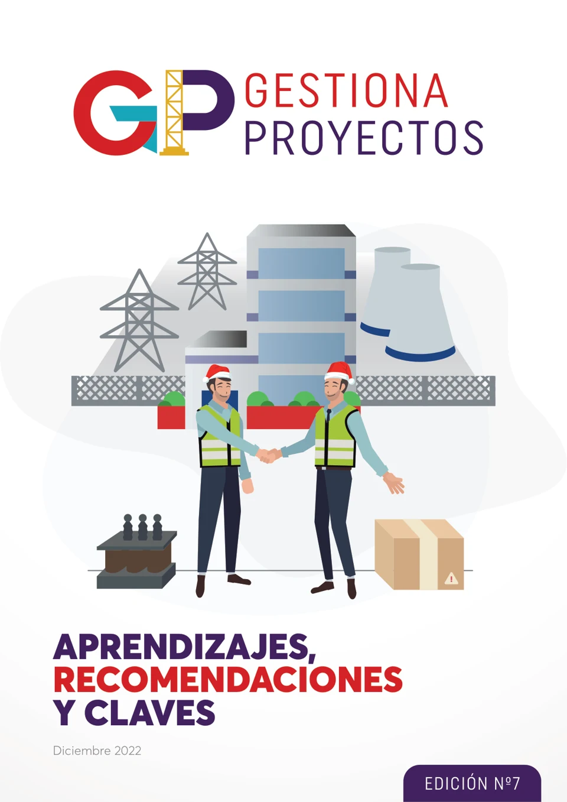

Gestiona Proyectos · Edición 7
Aprendizajes, recomendaciones y claves para la gestión de proyectos.
Leer revista : Gestiona Proyectos · Edición 7, PDF en una nueva pestañaExplora Gestiona Proyectos, la revista de MALBA PMC: experiencias, aprendizajes y perspectivas para dirigir proyectos con mayor criterio.
Explorar publicaciones
Elige una edición y descubre ideas para tu siguiente proyecto. Todas las revistas están disponibles en PDF.
Aprendizajes, recomendaciones y claves para la gestión de proyectos.
Leer revista : Gestiona Proyectos · Edición 7, PDF en una nueva pestañaOficina de gestión de proyectos: PMO.
Leer revista : Gestiona Proyectos · Edición 6, PDF en una nueva pestañaControl de proyectos: seguimiento y toma de decisiones.
Leer revista : Gestiona Proyectos · Edición 5, PDF en una nueva pestañaGestión de riesgos en proyectos.
Leer revista : Gestiona Proyectos · Edición 4, PDF en una nueva pestañaLecciones aprendidas: convierte la experiencia en conocimiento.
Leer revista : Gestiona Proyectos · Edición 3, PDF en una nueva pestañaGestión de cambios en los proyectos.
Leer revista : Gestiona Proyectos · Edición 2, PDF en una nueva pestañaFactores críticos para un proyecto exitoso.
Leer revista : Gestiona Proyectos · Edición 1, PDF en una nueva pestaña